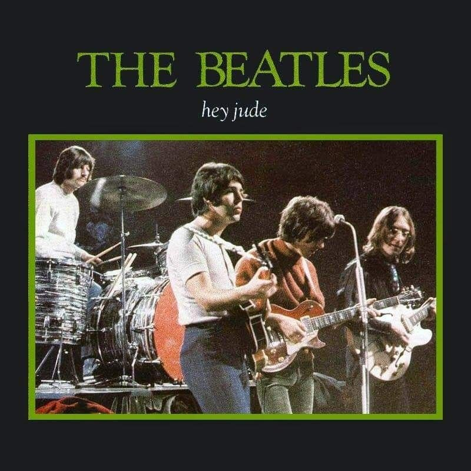

The Beatles foi uma banda de rock britânica formada na cidade de Liverpool em 1960. Com os integrantes John Lennon, Paul McCartney, George Harrison e Ringo Starr, tornou-se amplamente reconhecido como o maior e mais influente grupo musical da história — tendo sido essencial para o desenvolvimento da contracultura da década de 1960 e para o reconhecimento da música popular como forma de arte.


Enraizados no skiffle, beat e o rock and roll dos anos 1950, os Beatles mais tarde experimentaram com diversos gêneros, desde baladas pop e a música indiana até a música psicodélica e o hard rock, e incorporaram elementos clássicos de maneiras inovadoras. Em meados da década de 1960, a imensa popularidade da banda tornou-se conhecida como a "Beatlemania", mas conforme a música do grupo crescia em sofisticação, liderada pelos principais compositores Lennon e McCartney, seus membros começaram a ser percebidos como uma incorporação dos ideais compartilhados pelas revoluções socioculturais da era.

Suas inovações musicais e sucesso comercial inspiraram músicos em todo o mundo.[281] Muitos artistas reconheceram a influência dos Beatles e tiveram sucesso nas paradas com covers de suas canções.[285] No rádio, sua chegada marcou o início de uma nova era; em 1968, o diretor do programa da estação de rádio WABC de Nova York proibiu seus DJs de tocar qualquer música "pré-Beatles", marcando a linha de definição do que seria considerado oldies na rádio estadunidense.[286] Eles ajudaram a redefinir o álbum como algo mais do que apenas alguns hits com "enchimento"[287] e foram os principais inovadores do videoclipe moderno.[288] O show do Shea Stadium com o qual eles abriram sua turnê norte-americana em 1965 atraiu cerca de 55 600 pessoas,[289] a maior audiência da história do concerto; Spitz descreve o evento como um "grande avanço ... um passo gigantesco para reformular o negócio de shows".[290] A emulação de suas roupas e, especialmente, de seus penteados, que se tornaram uma marca de rebelião, teve um impacto global na moda.
Doubt (demo)
